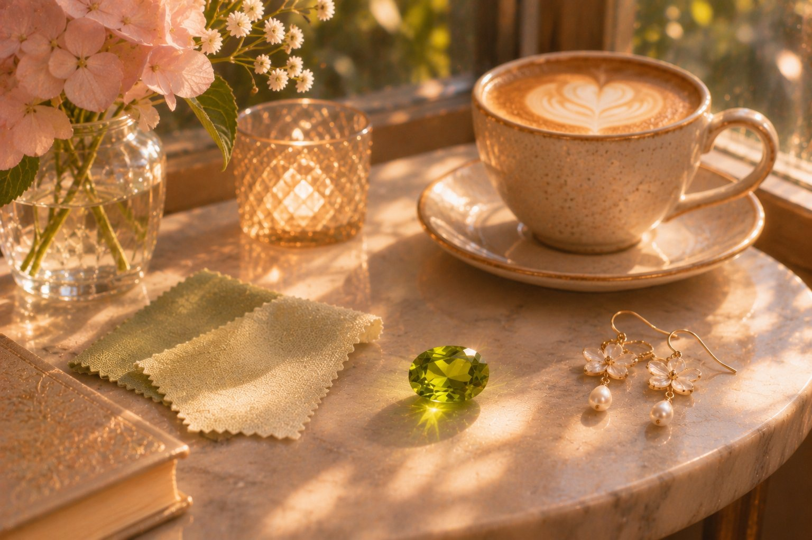

You can spend forty minutes choosing between two nearly identical dresses, yet somehow know within five seconds that your best friend's new crush is a terrible idea. Everyone thinks you're sweet and indecisive. There's a little more to it. Libra (September 23 to October 22) has a birthstone called peridot, a vivid yellow-green.

The Libra everyone knows
Why Does Everyone Think Libra Is So Effortlessly Charming?
You're the girl who somehow makes a coffee date feel like a scene from a romantic movie.
You notice pretty windows, interesting earrings, and the way afternoon sunlight falls across someone's face.
When two friends disagree, you can usually understand both sides. Unfortunately, this means you've accidentally become the relationship counselor for your entire group chat.
You also have an impressive ability to make someone feel interesting, even when they're telling you a very boring story.
People tend to like themselves a little more when they're around you.
The Libra nobody sees
What Do You Really Want Beneath That Sweet Smile?
You have surprisingly strong opinions for someone who says "I don't mind" approximately six times a day.
Sometimes you imagine saying exactly what you think and watching everyone's expressions change.
You secretly admire girls who wear whatever they want and never apologize for being themselves.
In George Kunz's 1913 book The Curious Lore of Precious Stones, Libra's stone is chrysolite.
Today we call it peridot, and its bright yellow-green mirrors your hidden desire to live a little more freely.
There's a wonderfully outspoken girl somewhere inside you.
The trouble with keeping everyone happy
Does Libra Ever Say What She Really Thinks?
Someone asks where you want to eat. You say anywhere. They choose somewhere you absolutely hate.
Fantastic.
You've spent so long considering what everyone else might enjoy that you've occasionally forgotten to ask yourself.
The Libra symbol shows a pair of scales. You probably recognize that endless little balancing act happening inside your head.
You can understand someone's reasons for hurting you and still wish they'd apologize.
People mistake your willingness to compromise for a lack of opinions. They rarely notice how many decisions you've quietly made for everyone except you.
When nobody needs an answer
Who Would You Be If Nobody Could Judge You?
It's 2 a.m. You're making a playlist for an imaginary road trip with absolutely no destination.
You try on an outfit you'd normally consider too bold, look in the mirror, and decide you actually love it.
Then you open your journal and write down something you've been too polite to say out loud.
It feels surprisingly good.
Maybe yellow-green is the color of that slightly rebellious girl who appears when you're no longer worrying about anyone's reaction.
Tonight, the only opinion that matters belongs to you.
When your green side wants out, Gemflow turns emerald into slow-moving light on your phone, so you can watch your inner color for once.
Peridot is the Libra birthstone, a bright yellow-green that mirrors the boldly independent girl hiding inside you.